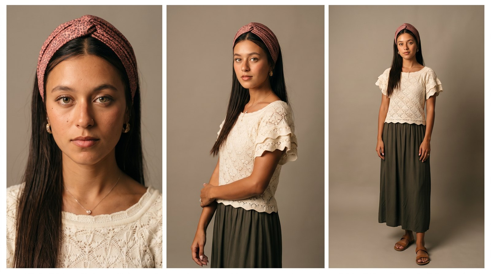
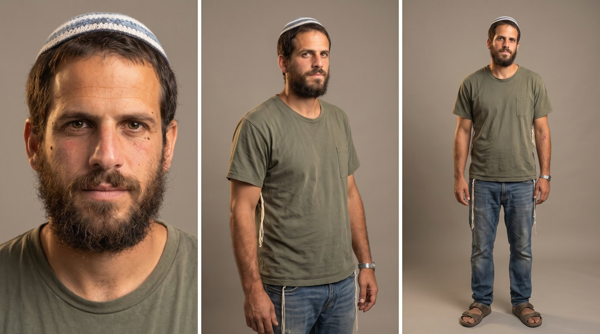
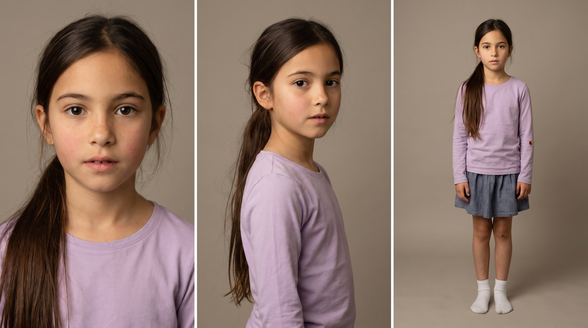
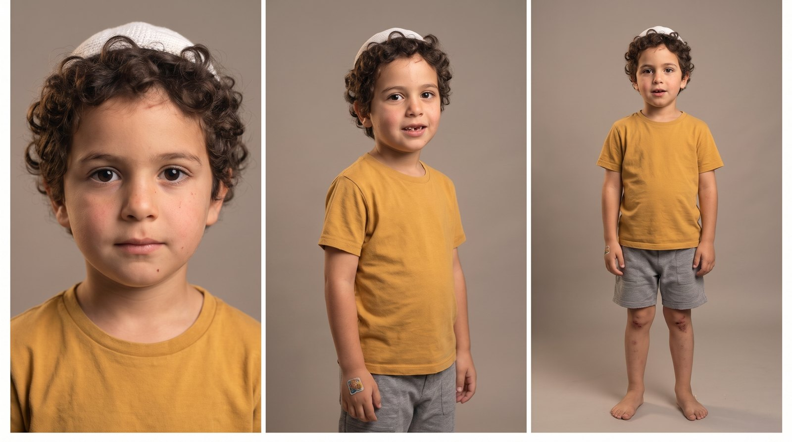
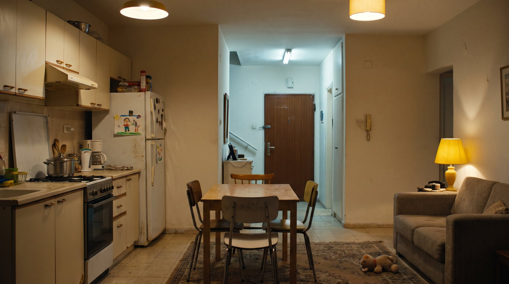

אגף הרווחה · עיריית שדרותקמפיין ליום המאבק באלימות במשפחה
בהפקת
ההורים רבים במטבח. בלי מילים שאפשר להבין, בלי מכה. הילדה שומעת את הטון, לוקחת את אחיה הקטן לחדר, סוגרת את הדלת בשקט ושמה לו אוזניות. אף אחד לא אמר לה מה לעשות. היא כבר יודעת.
כל דמות מוצגת בשלוש זוויות: פנים, שלושה-רבעים וגוף מלא, בלבוש של הסרטון. ככה היא תיראה בכל השוטים.

האםבת 29, דתייה-לאומית ליברלית. מטפחת-סרט ורודה מנומרת, שיער ארוך וחלק בחוץ, חולצת קרושה קרם, חצאית זית, נזם ועגילים. עור צעיר, בלי עייפות. בלי צלקת בגבה.
האבבן 42, דתי-לאומי בסגנון קיבוצי. כיפה סרוגה לבנה-כחולה גדולה יותר, זקן מלא, טי-שירט זית עם כיס, ציצית, ג'ינס וסנדלים. בלי צלקת בגבה.
הילדהבת 8, דומה לאם (עיניים, עור, קו גבות) ולאב (אף, צורת פנים). שיער ארוך חלק בקוקו, חולצת לילך, חצאית, גרביים לבנות.
הילדבן 5, תלתלים כמו של האב, עיניים כמו של האם. כיפה סרוגה לבנה קטנה, טי-שירט חרדל, מכנסי טרנינג אפורים, יחף.
הדירהמטבח פתוח לסלון, שולחן אוכל, ציור על המקרר, צעצוע על השטיח, ודלת הכניסה בעומק. אור ערב חם, אור קר יותר מחדר המדרגות. כולל חדר ילדים: מיטה, מנורת לילה, אוזניות גדולות וטאבלט ישן.לכל שוט: מה רואים, מה שומעים, איך המצלמה מצלמת, מה האור והקומפוזיציה, ומה הצופה אמור להבין ברגע הזה.
כל הטקסטים נבנים בעריכה, בעברית, באזור הבטוח של אינסטגרם. הנוסחים כאן לאישורכם.
חמשת הסרטונים מופקים דרך Efect, בהובלת אוראל לוי: תסריט, בימוי, יצירת הדמויות והסצנות, עריכה, סאונד וטקסטים, עד חמישה סרטונים מוכנים לפרסום.